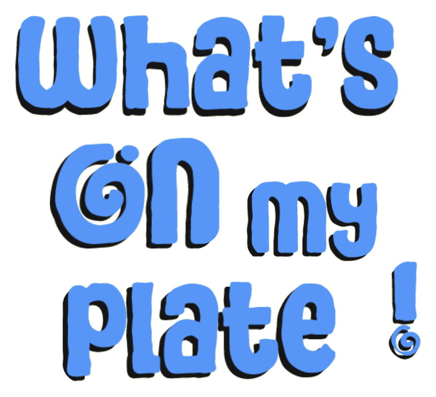

What's On My Plate

Build a plate from today's USC dining hall menus and watch the calories and macros add up as you go.
See today's menu1. Pick a hall
Everybody's Kitchen, Parkside, or USC Village. Then choose breakfast, lunch, or dinner.
2. Build a plate
Tap dishes to add them. Protein picks sit up top, and each one can be light, regular, or extra.
3. Save it for later
Name a plate you liked and load it back the next time those dishes come around.